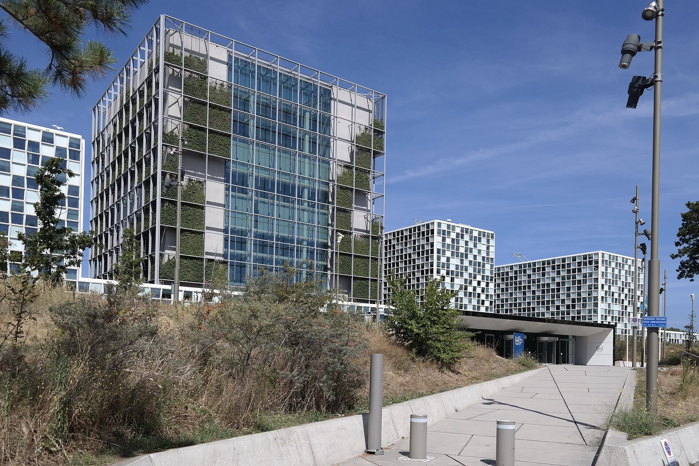

Международный суд (ICJ) и Международный уголовный суд (ICC): в чём разница между двумя судами
В новостях часто упоминают «суд в Гааге», но на самом деле в нидерландском городе Гаага расположены два совершенно разных суда: Международный суд (ICJ) рассматривает споры между государствами, а Международный уголовный суд (ICC) судит отдельных лиц за тяжкие преступления. Эта справка объясняет структуру, компетенцию и различия двух судов только на основе официальных и надёжных источников.

В международных новостях часто встречаются фразы вроде «суд в Гааге обвинил государство» или «Гаага выдала ордер». Многие считают это одним учреждением, но в нидерландском городе Гаага расположены два совершенно отдельных суда, и они различаются принципиально: Международный суд (International Court of Justice, ICJ) и Международный уголовный суд (International Criminal Court, ICC). Это ни одно и то же здание, ни одна и та же работа. Ниже структура, компетенция и ключевое различие двух судов изложены только на основе официальных документов и надёжных источников (Источник: официальный сайт ICJ; официальный сайт ICC; Britannica).
Международный суд (ICJ)
Международный суд был учреждён в 1945 году на основе Устава ООН и начал работу в 1946 году; его Статут является неотъемлемой частью Устава ООН. Этот суд является главным судебным органом Организации Объединённых Наций и расположен не в Нью-Йорке, а во Дворце мира (Peace Palace) в Гааге — это единственный главный орган ООН, чья резиденция находится за пределами Нью-Йорка. В суде 15 судей, которые избираются на девять лет Генеральной Ассамблеей и Советом Безопасности ООН при раздельном голосовании. Стороной в ICJ могут быть только ГОСУДАРСТВА — не отдельные лица, компании или организации. Суд выполняет две функции: разрешает правовые споры между государствами и даёт консультативные заключения по запросу органов ООН. Его решения обязательны для сторон и окончательны, но у суда нет собственного исполнительного аппарата: исполнение обеспечивается через Совет Безопасности ООН, политическими средствами (Источник: официальный сайт ICJ; Britannica; Wikipedia — International Court of Justice).
Международный уголовный суд (ICC)
Международный уголовный суд — гораздо более молодое учреждение: его учредительный договор, Римский статут, был принят 17 июля 1998 года и вступил в силу 1 июля 2002 года. Этот суд также расположен в Гааге, но не во Дворце мира, а в отдельном, специально построенном здании. Важнейшее отличие ICC от ICJ в том, что он судит не ГОСУДАРСТВА, а ОТДЕЛЬНЫХ ЛИЦ за четыре тяжких преступления: геноцид, преступления против человечности, военные преступления и преступление агрессии. Суд работает по принципу «комплементарности» (дополняемости) — он вмешивается только тогда, когда национальные суды не способны или не желают рассматривать дело; приоритет имеет национальный суд. В ICC 18 судей, а Канцелярия прокурора (Office of the Prosecutor) ведёт независимое расследование и предъявляет обвинения. По состоянию на 2024 год суд имеет около 124–125 государств-участников (членов), причём источники немного расходятся в точном числе. Важный момент: ICC НЕ является органом ООН; это независимая организация, созданная международным договором, хотя она сотрудничает с ООН, а Совет Безопасности может передавать ей ситуации (Источник: официальный сайт ICC; Римский статут — ООН; Ассамблея государств-участников ICC).

Ключевые различия
Проще всего различить два суда, запомнив, кого и за что они судят. ICJ рассматривает споры МЕЖДУ ГОСУДАРСТВАМИ (например, иски о границах, договорах или нарушении конвенции) и даёт правовые консультации; ICC привлекает к уголовной ответственности ФИЗИЧЕСКИХ ЛИЦ. ICJ — судебный орган ООН, созданный Уставом ООН (1945); ICC — независимое договорное учреждение, созданное Римским статутом (1998, вступил в силу в 2002). В ICJ 15 судей, в ICC — 18. Оба суда находятся в Гааге, но в разных зданиях. Решение ICJ обязательно для государства, но его исполнение зависит от Совета Безопасности; ICC осуждает и выносит приговор отдельным лицам, но для их ареста и передачи полагается на сотрудничество государств (Источник: официальный сайт ICJ; официальный сайт ICC; Britannica).
Частые путаницы
Эти два суда также широко путают с другими международными судами. Европейский суд по правам человека (ECtHR) — совершенно иное учреждение: он находится в Страсбурге, относится к Совету Европы (46 государств-членов) и рассматривает жалобы по правам человека, в том числе от отдельных граждан. Суд Европейского союза (CJEU) находится в Люксембурге и толкует только право ЕС. Короче говоря, по каждой новости стоит спрашивать «какой суд?» — ICJ или ICC в Гааге, либо совсем другой суд в Страсбурге или Люксембурге (Источник: Britannica; Wikipedia — European Court of Human Rights; Court of Justice of the European Union).
Узбекистан и эти суды
Узбекистан стал членом ООН 2 марта 1992 года и поэтому, согласно статье 93 Устава ООН, автоматически является участником Статута Международного суда (ICJ) — все члены ООН являются участниками Статута ICJ. С Международным уголовным судом (ICC) ситуация иная: Узбекистан ПОДПИСАЛ Римский статут 29 декабря 2000 года, но НЕ РАТИФИЦИРОВАЛ его, поэтому он не является государством-участником ICC и не имеет договорного обязательства сотрудничать с судом. В Центральной Азии членство в ICC таково: Таджикистан был единственным государством, ратифицировавшим Римский статут, в 2000 году (примечание: в ноябре 2026 года Таджикистан уведомил о выходе, но по статье 127 Римского статута это решение вступает в силу через год); Кыргызстан подписал, но не ратифицировал; Казахстан и Туркменистан вовсе не подписывали (Источник: Устав ООН, статья 93; Coalition for the ICC; Parliamentarians for Global Action — Rome Statute status).
Почему это важно
Чтобы правильно понимать международные новости, нужно различать, о каком суде идёт речь: когда государство подаёт на другое государство в ICJ — это межгосударственный спор; когда ICC выдаёт ордер на человека — это уголовное обвинение против конкретного лица. Одно не может заменить другое. Конкретные дела и ордера, упомянутые в этой статье (например, иски между государствами или ордера на отдельных руководителей), приведены только как примеры; сама справка посвящена различию в структуре и компетенции, которое не меняется со временем. Все цифры и даты приведены только на основе официальных и надёжных источников; там, где источники расходились (например, по числу государств-участников), информация дана в осторожной форме.

Источники
- International Court of Justice — official site (How the Court works)
- International Criminal Court — official site (How the Court works)
- ICC Assembly of States Parties
- Rome Statute of the International Criminal Court (UN)
- Britannica — International Court of Justice
- Wikipedia — International Court of Justice
- Wikipedia — International Criminal Court
- Coalition for the International Criminal Court
- Parliamentarians for Global Action — Rome Statute status